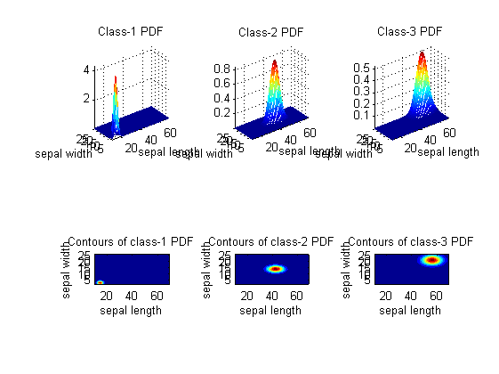
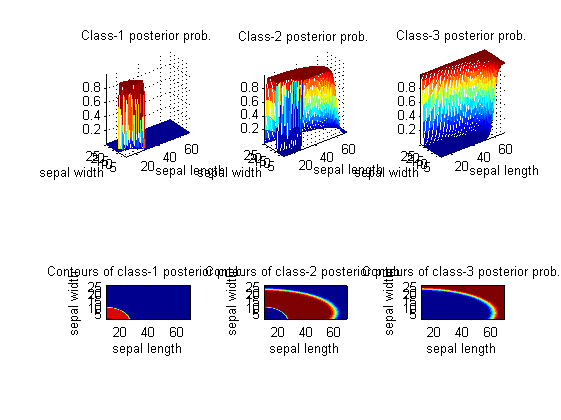
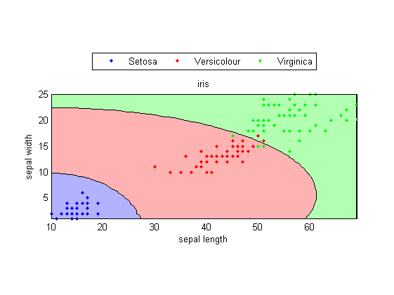

nbcPlot
Plot the results of NBC (naive Bayes classifier)
Contents
Syntax
- nbcPlot(DS, nbcPrm)
- nbcPlot(DS, nbcPrm, mode)
- surfObj=nbcPlot(DS, nbcPrm, ...)
Description
nbcPlot(DS, nbcPrm) plots the results of NBC (naive Bayes classifier)
- DS: dataset used for training
- nbcPrm: parameters of NBC obtain from nbcTrain
nbcPlot(DS, nbcPrm, mode) uses an additional string variable to specify the type of plot
- mode='1dPdf' for 1D PDF plot
- mode='2dPdf' for 2D PDF plot
- mode='2dPosterior' for 2D posterior probability plot
- mode='decBoundary' for decision boundary plot
surfObj=nbcPlot(DS, nbcPrm, ...) return the surface object for plotting instead of plotting directly.
Example
This example uses features 3 and 4 of IRIS dataset for classification:
DS=prData('iris'); % Load iris dataset DS.input=DS.input(3:4, :); % Use only features 3 and 4 nbcPrm=nbcTrain(DS); % Do NBC training
Plot 1D PDF:
figure; nbcPlot(DS, nbcPrm, '1dPdf');

Plot 2D PDF:
figure; nbcPlot(DS, nbcPrm, '2dPdf');
 Plot 2D posterior probability:
figure; nbcPlot(DS, nbcPrm, '2dPosterior');
 Plot decision boundary:
figure; nbcPlot(DS, nbcPrm, 'decBoundary');
